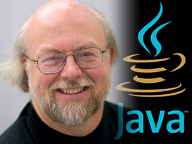

Es un famoso científico de la computación, por la Universidad de Calgary, nacido cerca de la propia Calgary (Canadá). Se doctoró en 1983 y su tesis doctoral se llamó La manipulación algebráica de las limitaciones.
Mientras trabajaba en la tesis, escribió una versión de Emacs, llamada Gosling Emacs (un editor de texto muy popular entre programadores y usuarios técnicos).
Posteriormente construyó una versión multi-procesador de Unix, varios compiladores y sistemas de correo.
